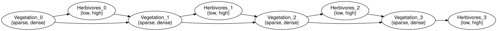
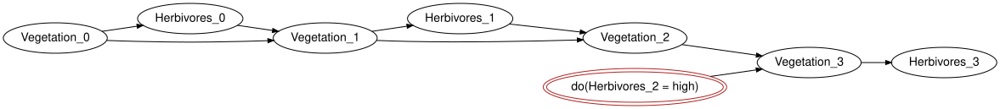

Dynamic networks: templates and unrolling
Simon Frost
- Overview
- Setup
- The template
- Unrolling
- A lag-three boundary is three initial slices
- Unrolling is gluing
- Semantics
- Forward marginals
- Intervening in one slice
- Management as an exogenous input
- Summary
- References
Overview
Ecological feedback is a cycle: vegetation feeds herbivores and herbivores eat vegetation. A Bayesian network cannot hold a cycle, but a dynamic Bayesian network can, by placing the two halves of the loop in different time slices: Vegetation_t -> Herbivores_t within a slice and Herbivores_{t-1} -> Vegetation_t across slices, which is the standard two-slice presentation of a dynamic Bayesian network (Koller and Friedman 2009). BayesianNetworks.jl represents such a model as a template (DynamicBayesNet) that unroll compiles, for any finite horizon, into an ordinary closed network. Every facility of the package then applies unchanged: validation, evaluation, evidence, interventions, drawing and, through BayesianNetworkInference.jl, variable elimination on long horizons – the operation whose categorical form is marginalisation in a Markov category (Lorenzin and Zanasi 2025).
Setup
using BayesianNetworksThe template
A template has two parts, both plain BayesNets. The transition template describes a generic slice t: its current variables (Vegetation, Herbivores) have mechanisms, and its lagged variables, named with the convention lagged(:X, k) (X[t-1], X[t-2], …), are exogenous stand-ins for earlier slices. The initial network is a closed network over the first slice. The example below is vegetation_herbivore_dbn().
initial = bayesnet(:Vegetation => [:sparse, :dense], :Herbivores => [:low, :high];
mechanisms = [:Herbivores => :Vegetation])
transition = bayesnet(:Vegetation => [:sparse, :dense], :Herbivores => [:low, :high],
lagged(:Vegetation, 1) => [:sparse, :dense],
lagged(:Herbivores, 1) => [:low, :high];
mechanisms = [:Vegetation => (lagged(:Vegetation, 1),
lagged(:Herbivores, 1)),
:Herbivores => :Vegetation],
closed = false)
dbn = DynamicBayesNet(initial, transition)DynamicBayesNet(2 variables per slice, 2 lagged inputs, lags = 1)current_variables(dbn), lagged_variables(dbn), lags(dbn)([:Vegetation, :Herbivores], [Symbol("Vegetation[t-1]"), Symbol("Herbivores[t-1]")], 1)The constructor validates the template: every current variable needs a mechanism, lagged variables must not have one, every X[t-k] must be a lag of a current X with the same states, and the initial network must cover exactly the current variables.
bad = bayesnet(:Vegetation => [:sparse, :dense], :Herbivores => [:low, :high],
lagged(:Vegetation, 1) => [:sparse, :dense];
mechanisms = [:Vegetation => lagged(:Vegetation, 1)], closed = false)
try
DynamicBayesNet(initial, bad)
catch e
sprint(showerror, e)
end"DynamicTemplateError (missing_mechanism): variable :Herbivores: current variable of the transition has no mechanism"Unrolling
unroll(dbn, h) builds the closed network over slices 0, ..., h. Variables are named variable_at(:X, t), that is X_t; slice 0 comes from the initial network and every later slice from the transition template, with each lagged input X[t-k] wired to X_{t-k}. The boundary is exact: with maximal lag L the initial network covers slices 0 to L - 1 (for L = 1, just slice 0), so no lagged parent is ever missing.
u = unroll(dbn, 3)
validate(u; closed = true, unique_names = true)
variable_names(u)8-element Vector{Symbol}:
:Vegetation_0
:Herbivores_0
:Vegetation_1
:Herbivores_1
:Vegetation_2
:Herbivores_2
:Vegetation_3
:Herbivores_3variable_name.(Ref(u), parents(u, :Vegetation_2))2-element Vector{Symbol}:
:Vegetation_1
:Herbivores_1Vegetation_2 reads slice 1, so the lag has become an ordinary arrow between slices, which the drawing lays out left to right:
to_graphviz(u; rankdir = "LR")
slice_variables and horizon read the slice structure back from the names:
slice_variables(u, 2), horizon(u)([:Vegetation_2, :Herbivores_2], 3)A lag-three boundary is three initial slices
For maximal lag three, the initial network supplies slices 0, 1 and 2 jointly. Its lag notation is relative to slice 2: X[t-2], X[t-1] and X become X_0, X_1 and X_2. They need not have the same initial distribution.
initial3 = bayesnet(lagged(:X, 2) => [:no, :yes],
lagged(:X, 1) => [:no, :yes], :X => [:no, :yes])
transition3 = bayesnet(:X => [:no, :yes], lagged(:X, 3) => [:no, :yes];
mechanisms = [:X => lagged(:X, 3)], closed = false)
dm3 = DynamicBayesModel(DynamicBayesNet(initial3, transition3))
dm3 = bind_cpt(dm3, [lagged(:X, 2) => [0.9, 0.1],
lagged(:X, 1) => [0.5, 0.5], :X => [0.2, 0.8]]; slice = :initial)
dm3 = bind_cpt(dm3, :X => [0.8 0.2; 0.1 0.9])
u3 = unroll(dm3, 5)
[(slice = t,
parents = variable_name.(Ref(syntax(u3)), parents(syntax(u3), variable_at(:X, t))),
probability_yes = round(marginal(u3, variable_at(:X, t)).table[2]; digits = 4))
for t in 0:5]6-element Vector{NamedTuple{(:slice, :parents, :probability_yes)}}:
(slice = 0, parents = Any[], probability_yes = 0.1)
(slice = 1, parents = Any[], probability_yes = 0.5)
(slice = 2, parents = Any[], probability_yes = 0.8)
(slice = 3, parents = [:X_0], probability_yes = 0.27)
(slice = 4, parents = [:X_1], probability_yes = 0.55)
(slice = 5, parents = [:X_2], probability_yes = 0.76)The first transition is at slice 3, reading slice 0, not an invented negative slice or a repeated copy of the slice-2 initial state. Since the transition sends a probability p to 0.2 + 0.7p, slices 3, 4 and 5 have probabilities 0.27, 0.55 and 0.76. Dropping the missing lag or reusing one initial marginal for all three slices would change those numbers.
Unrolling is gluing
The unrolled network is what the open-network machinery produces when consecutive slices are glued along the lagged variables, as structured cospans (Baez and Courser 2020). initial_slice is the initial network renamed to slice 0 and transition_slice(dbn, t) the transition template seen from slice t, with the lagged variables exogenous.
variable_names(initial_slice(dbn)), variable_names(transition_slice(dbn, 1))([:Vegetation_0, :Herbivores_0], [:Vegetation_1, :Herbivores_1, :Vegetation_0, :Herbivores_0])Gluing the outputs of the first to the inputs of the second gives unroll(dbn, 1) up to renumbering. Open and glue live in CategoricalBayesianNetworks.jl, which shows that identity as a worked example; unroll builds the network directly rather than by repeated pushouts, and both test suites keep the two constructions in agreement.
Semantics
A DynamicBayesModel carries a BayesModel for each template. Kernels are bound with bind_cpt (or bind_kernel) on the chosen slice; the domain axes of a transition kernel are named like the template’s inputs, lagged names included. vegetation_herbivore_model() binds fixed tables: vegetation recovers when herbivores are few and declines when they are many, and herbivores track vegetation.
dm = vegetation_herbivore_model()
kernel(dm, :Vegetation)FiniteKernel{Float64}(Vegetation[t-1]{sparse,dense} ⊗ Herbivores[t-1]{low,high} → Vegetation{sparse,dense})
sparse,low dense,low sparse,high dense,high
sparse 0.5 0.1 0.8 0.4
dense 0.5 0.9 0.2 0.6round.(kernel(dm, :Vegetation).table; digits = 2) # outputs-first: (Vegetation, Vegetation[t-1], Herbivores[t-1])2×2×2 Array{Float64, 3}:
[:, :, 1] =
0.5 0.1
0.5 0.9
[:, :, 2] =
0.8 0.4
0.2 0.6unroll on the model copies the kernels into every slice, renaming their axes, so the result is an ordinary model with semantics.
um = unroll(dm, 3)
validate(um; closed = true, unique_names = true, semantics = true)
names(kernel(um, :Vegetation_2).dom)2-element Vector{Symbol}:
:Vegetation_1
:Herbivores_1Forward marginals
rollout returns the marginal of a variable in every slice (brute force through marginal, fine for short horizons); filter_marginal asks for one slice, given the model’s evidence.
rv = rollout(um, :Vegetation)
rh = rollout(um, :Herbivores)
fmt(x) = lpad(string(round(x; digits = 4)), 8)
println(" t P(Vegetation = dense) P(Herbivores = high)")
for t in 0:horizon(syntax(um))
println(lpad(t, 2), " ", lpad(fmt(rv[t + 1].table[2]), 21), " ",
lpad(fmt(rh[t + 1].table[2]), 20))
end t P(Vegetation = dense) P(Herbivores = high)
0 0.6 0.54
1 0.578 0.5312
2 0.5718 0.5287
3 0.5701 0.528The same numbers follow from the forward recursion of the two-variable chain: the joint of (Vegetation_t, Herbivores_t) composed with the transition kernel gives the next vegetation marginal. Kernels compose, so this is one line.
J0 = marginal(um, [:Vegetation_0, :Herbivores_0])
T = kernel(um, :Vegetation_1)
compose_kernel(J0, T).table ≈ rv[2].tabletrueEvidence in one slice propagates both forwards (filtering) and backwards (smoothing):
ume = observe(um, :Herbivores_1 => :high)
(round.(filter_marginal(ume, :Vegetation, 2).table; digits = 4),
round.(filter_marginal(ume, :Vegetation, 0).table; digits = 4))([0.4953, 0.5047], [0.3494, 0.6506])For long horizons the unrolled model is just a large network: BayesianNetworkInference.infer answers the same queries by variable elimination without enumerating the joint.
Intervening in one slice
An intervention on Herbivores_2 is a local rewrite of the unrolled network: the mechanism of that one variable is replaced by a point mass. Earlier slices are untouched and later ones respond.
umi = do_intervention(um, :Herbivores_2 => :high)
rvi = rollout(umi, :Vegetation)
println(" t P(dense) P(dense | do(Herbivores_2 = high))")
for t in 0:3
println(lpad(t, 2), " ", fmt(rv[t + 1].table[2]), " ", fmt(rvi[t + 1].table[2]))
end t P(dense) P(dense | do(Herbivores_2 = high))
0 0.6 0.6
1 0.578 0.578
2 0.5718 0.5718
3 0.5701 0.4287to_graphviz(umi; rankdir = "LR", states = false)
Observation of the same event, by contrast, also moves the earlier slices:
rvo = rollout(observe(um, :Herbivores_2 => :high), :Vegetation)
round.([k.table[2] for k in rvo]; digits = 4)4-element Vector{Float64}:
0.6142
0.6297
0.7571
0.5028Management as an exogenous input
vegetation_herbivore_dbn(management = true) adds an exogenous Management variable (none, cull) to every slice, feeding the herbivore mechanism. Setting it in one slice by evidence or intervention gives the same downstream effect, because it has no parents.
umm = unroll(vegetation_herbivore_model(management = true), 3)
(round.(marginal(umm, :Vegetation_3).table; digits = 4),
round.(marginal(umm, :Vegetation_3; evidence = Dict(:Management_2 => :cull)).table; digits = 4),
round.(marginal(do_intervention(umm, :Management_2 => :cull), :Vegetation_3).table; digits = 4))([0.4088, 0.5912], [0.3466, 0.6534], [0.3466, 0.6534])Summary
- A
DynamicBayesNetis an initial network plus a transition template whose lagged inputs follow theX[t-k]naming convention;validatechecks the template. unroll(dbn, h)compiles a finite horizon into a closedBayesNetwith variablesX_t; on aDynamicBayesModelthe kernels are copied per slice.- Unrolling agrees with gluing consecutive slices as open networks.
rolloutandfilter_marginalgive forward marginals by brute force; evidence and interventions on individual slices work as in any other model.
The next vignette, Model cards and provenance, documents a finished model rather than computing with it.
References
Baez, John C., and Kenny Courser. 2020. “Structured Cospans.” Theory and Applications of Categories 35 (48): 1771–822.
Koller, Daphne, and Nir Friedman. 2009. Probabilistic Graphical Models: Principles and Techniques. MIT Press.
Lorenzin, Antonio, and Fabio Zanasi. 2025. Bayesian Networks, Markov Networks, Moralisation, Triangulation: A Categorical Perspective. https://arxiv.org/abs/2512.09908.